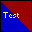
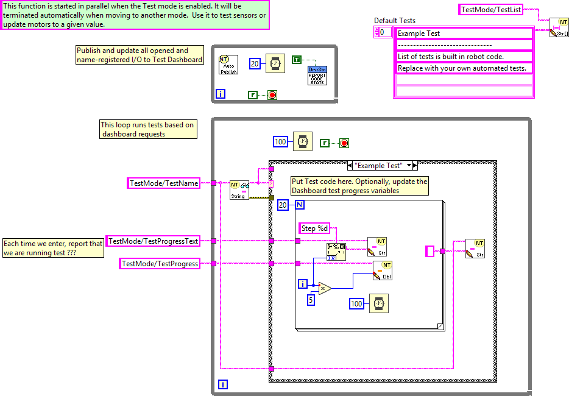
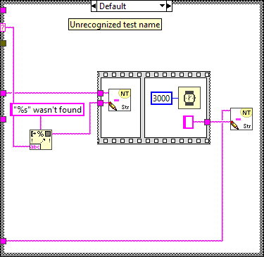
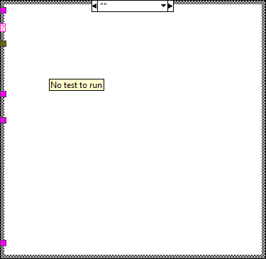

This VI is called when test mode begins, and will automatically be terminated when it ends. You can add manual or automatic tests and invoke them from the dashboard.
Connector Pane

Front Panel
Controls and Indicators
Block Diagram



List of SubVIs and Express VIs with Configuration Information